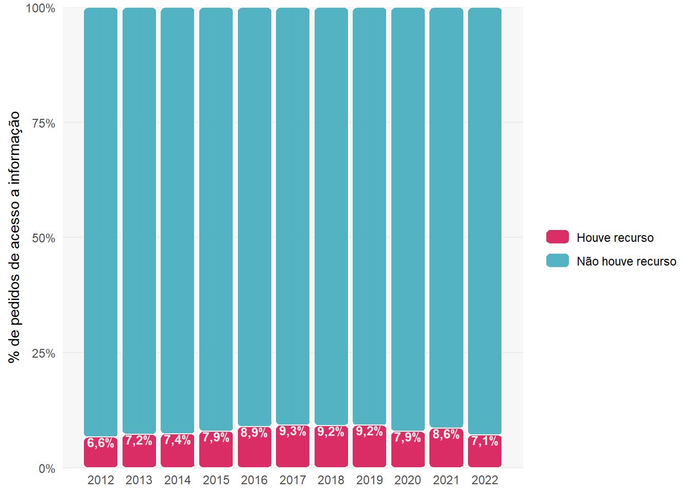
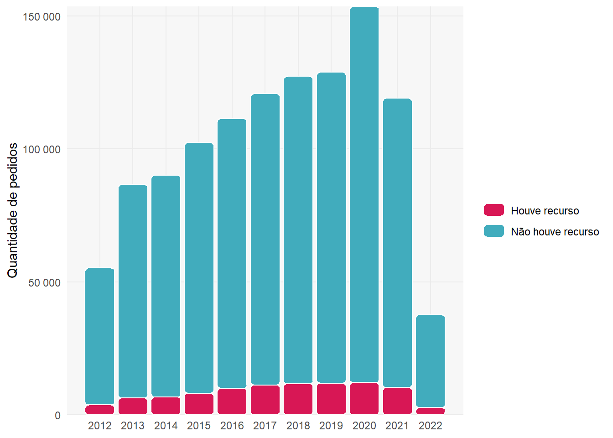
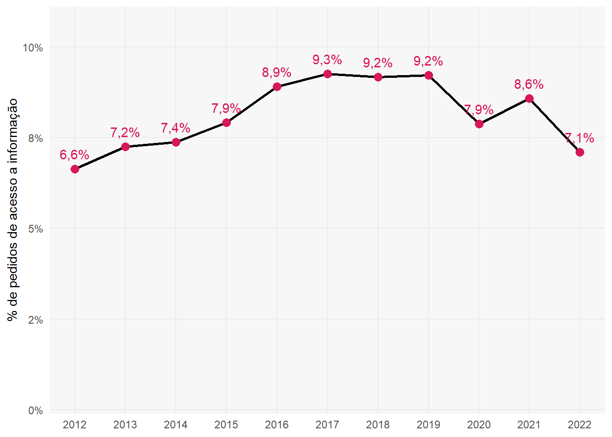
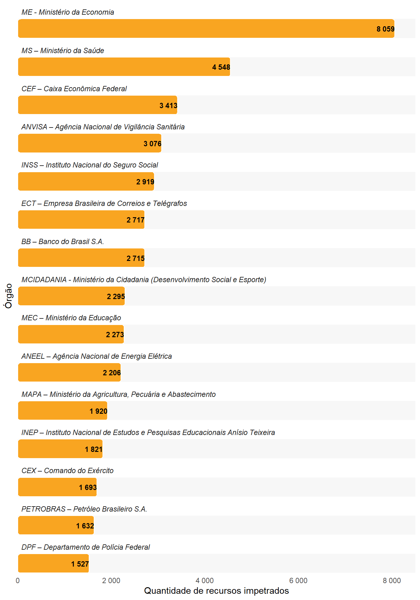
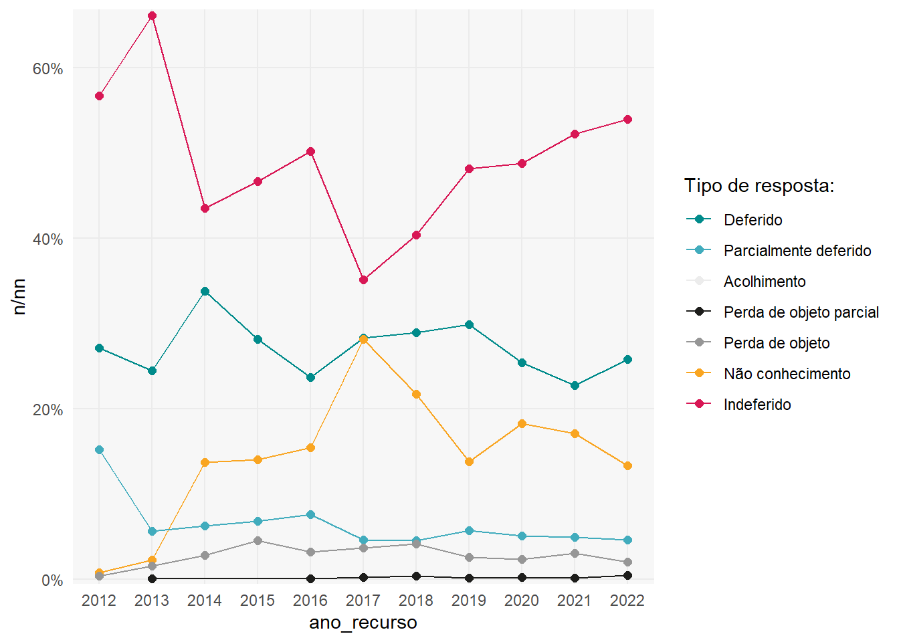
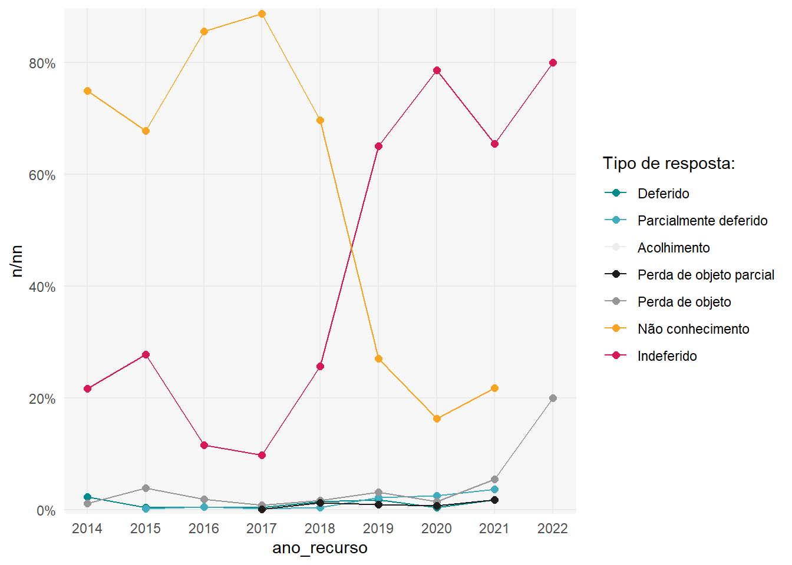
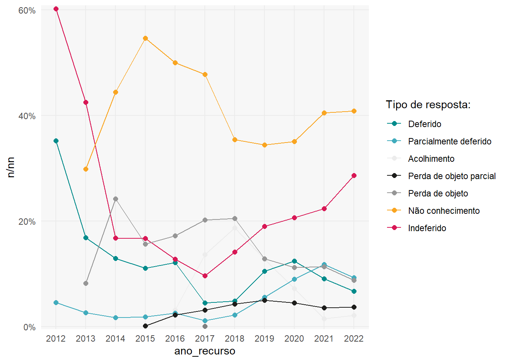

library(tidyverse)#> ── Attaching packages ─────────────────────────────────────── tidyverse 1.3.1 ──#> ✔ ggplot2 3.3.6 ✔ purrr 0.3.4#> ✔ tibble 3.1.8 ✔ dplyr 1.0.9#> ✔ tidyr 1.2.0 ✔ stringr 1.4.0#> ✔ readr 2.1.2 ✔ forcats 0.5.1#> Warning: package 'tibble' was built under R version 4.2.1#> ── Conflicts ────────────────────────────────────────── tidyverse_conflicts() ──#> ✖ dplyr::filter() masks stats::filter()#> ✖ dplyr::lag() masks stats::lag()library(here)#> here() starts at C:/Users/rauld/Documents/monitoramento-lailibrary(lubridate)#> #> Attaching package: 'lubridate'#> The following objects are masked from 'package:base':#> #> date, intersect, setdiff, unionlibrary(scales)#> #> Attaching package: 'scales'#> The following object is masked from 'package:purrr':#> #> discard#> The following object is masked from 'package:readr':#> #> col_factorlibrary(hrbrthemes)#> NOTE: Either Arial Narrow or Roboto Condensed fonts are required to use these themes.#> Please use hrbrthemes::import_roboto_condensed() to install Roboto Condensed and#> if Arial Narrow is not on your system, please see https://bit.ly/arialnarrowlibrary(patchwork)library(glue)
Código
# aplica identidade visual da TB/AeP:source(here("src/0-plot-aesthetics.R"), encoding ="UTF-8")#> You will likely need to install these fonts on your system as well.#> #> You can find them in [C:/Users/rauld/AppData/Local/R/win-library/4.2/hrbrthemes/fonts/roboto-condensed]# helper`%notin%`<-function(x, y) !(x %in% y)
Metodologia (taxa geral e interna de acessos negados)
Pedidos de acesso a informação são solicitações no FalaBr que não foram classificadas como: “Pergunta Duplicada/Repetida”, “Não se trata de solicitação de informação”.
As negativas de acesso são abordadas de duas formas:
pedidos_e_recursos %>%count(ano_pedido, entrou_com_recurso, sort =TRUE) %>%add_count(name ="total", ano_pedido, wt = n) %>%ggplot(aes(x = ano_pedido, y = n / total, fill =reorder(entrou_com_recurso, n))) + ggchicklet::geom_chicklet(alpha = .9) +geom_text(data = . %>%filter(entrou_com_recurso), size =3.3, fontface ="bold", vjust =1,aes(label =my_lbl(n / total)), color = cores_tb[["cinza_quase_branco"]]) +scale_fill_manual(values =c(cores_aep[["rosa"]], cores_tb[["azul"]]), labels =c("Houve recurso", "Não houve recurso"), name ="") +scale_y_percent(name ="% de pedidos de acesso a informação", expand =c(0, 0)) +scale_x_continuous(breaks =c(2012:2022), name =NULL)

Total de pedidos que entraram com recurso
Código
pedidos_e_recursos %>%count(ano_pedido, entrou_com_recurso, sort =TRUE) %>%add_count(name ="total", ano_pedido, wt = n) %>%ggplot(aes(x = ano_pedido, y = n, fill =reorder(entrou_com_recurso, n))) + ggchicklet::geom_chicklet() +scale_fill_manual(values =c(cores_aep[["rosa"]], cores_tb[["azul"]]), labels =c("Houve recurso", "Não houve recurso"), name ="") +scale_x_continuous(breaks =c(2012:2022), name =NULL) +scale_y_continuous(labels = scales::label_number(), name ="Quantidade de pedidos", expand =c(0, 0))

Evolução do % de recursos impetrados por ano
Código
pedidos_e_recursos %>%count(ano_pedido, entrou_com_recurso, sort =TRUE) %>%add_count(name ="total", ano_pedido, wt = n) %>%filter(entrou_com_recurso) %>%ggplot(aes(x = ano_pedido, y = n / total, group =reorder(entrou_com_recurso, n))) +geom_line(size =1) +geom_point(color = cores_aep[["rosa"]], size =3) +geom_text(aes(label =my_lbl(n / total)), color = cores_aep[["rosa"]], vjust =-1) +scale_y_percent(name ="% de pedidos de acesso a informação", limits =c(0, 0.11)) +scale_x_continuous(breaks =c(2012:2022), name =NULL)

Órgãos campeões de recursos impetrados (2012 - 2022, 15 primeiros)
Código
pedidos_e_recursos %>%filter(entrou_com_recurso) %>%count(orgao, sort =TRUE) %>%slice_max(order_by = n, n =15) %>%ggplot(aes(y = n, x =reorder(orgao, -n))) +coord_flip() + ggchicklet::geom_chicklet(fill = cores_aep[["laranja"]]) +geom_text(aes(label = scales::number(n, accuracy =1)), check_overlap = T,color ="black", hjust =1, size =3, fontface ="bold") +scale_x_discrete(expand =c(0, 0), name ="Órgão", labels =NULL) +scale_y_continuous(expand =c(0, 0), labels =number_format(), limits =c(0, 8500), name ="Quantidade de recursos impetrados") +facet_wrap(~reorder(orgao, -n), ncol =1, scales ="free_y") +theme(strip.text =element_text(hjust =0, face ="italic"),panel.grid.major.x =element_blank(),panel.grid.minor.x =element_blank(),panel.grid.major.y =element_blank(),panel.grid.minor.y =element_blank())

Código
cores_tipo_resposta2 <- cores_tipo_resposta %>%enframe() %>%mutate(value =case_when( name =="Deferido"~"cyan4", name =="Parcialmente deferido"~ cores_tb[["azul"]], name =="Perda de objeto parcial"~ cores_tb[["cinza_escuro"]], name =="Perda de objeto"~ cores_aep[["cinza"]], name =="Não conhecimento"~ cores_aep[["laranja"]], name =="Acolhimento"~ cores_tb[["cinza_quase_branco"]],TRUE~ value ) ) %>%deframe()plot_tipo_resposta <-function(df, instancia_recursal) { recursos_cgu %>%count(ano_recurso =year(data_recurso), instancia, tipo_resposta) %>%filter(instancia == instancia_recursal) %>%add_count(ano_recurso, wt = n) %>%ggplot(aes(x = ano_recurso, y = n / nn, color = tipo_resposta)) +geom_line() +geom_point(size =2) +scale_y_percent() +scale_color_manual(values = cores_tipo_resposta2, name ="Tipo de resposta:") +scale_x_continuous(breaks =2012:2022)}
Tipo de resposta dada aos recursos em primeira instância
Código
plot_tipo_resposta(recursos_cgu, "Primeira Instância")#> Storing counts in `nn`, as `n` already present in input#> ℹ Use `name = "new_name"` to pick a new name.
Tipo de resposta dada aos recursos em segunda instância
Código
plot_tipo_resposta(recursos_cgu, "Segunda Instância")#> Storing counts in `nn`, as `n` already present in input#> ℹ Use `name = "new_name"` to pick a new name.

Tipo de resposta dada aos recursos para a CMRI
Código
plot_tipo_resposta(recursos_cgu, "CMRI")#> Storing counts in `nn`, as `n` already present in input#> ℹ Use `name = "new_name"` to pick a new name.

Tipo de resposta dada aos recursos para a CGU
Código
plot_tipo_resposta(recursos_cgu, "CGU")#> Storing counts in `nn`, as `n` already present in input#> ℹ Use `name = "new_name"` to pick a new name.

Código fonte
---title: "Números da Lei de Acesso a Informação no Brasil"lang: pt-BRformat: html: anchor-sections: true code-fold: true code-tools: true code-link: true code-line-numbers: true code-summary: "Código" toc: true toc-title: "Índice" toc-depth: 4 footnotes-hover: true smooth-scroll: true search: true comments: hypothesis: trueknitr: opts_chunk: collapse: true comment: "#>" editor_options: chunk_output_type: consoleexecute: cache: false---<style>.nav-tabs.nav-link {margin-bottom: -1px;background: none;border: 1pxsolidtransparent;border-top-left-radius: .25rem;border-top-right-radius: .25rem;color: #fcaa27;font-size: 0.875em;}.nav-tabs.nav-link.active,.nav-tabs.nav-item.show.nav-link {color: #495057;background-color: #fff;border-color: #dee2e6#dee2e6#fff;color: #d81755;font-size: 1em;}</style>```{r libs}library(tidyverse)library(here)library(lubridate)library(scales)library(hrbrthemes)library(patchwork)library(glue)``````{r conf}# aplica identidade visual da TB/AeP:source(here("src/0-plot-aesthetics.R"), encoding ="UTF-8")# helper`%notin%`<-function(x, y) !(x %in% y)``````{r data-pedidos-cgu}pedidos_cgu <-"data/base-cgu.rds"%>%here() %>%readRDS() %>%filter(base =="Pedidos") %>%select(datasets) %>%unnest(c(datasets)) %>%filter(!is.na(decisao),!is.na(data_resposta), esfera =="Federal",!str_detect(orgao, "refeitura|Órgão para Teste") ) %>%transmute( id_pedido,mes_pedido = data_registro,mes_resposta = data_resposta,data_pedido =dmy(ts_registro),data_resposta =dmy(ts_resposta),prazo =dmy(prazo), decisao, orgao )``````{r data-recursos-cgu}recursos_cgu <-"data/base-cgu.rds"%>%here() %>%readRDS() %>%filter(base =="Recursos") %>%select(datasets) %>%unnest(c(datasets)) %>%filter(!is.na(instancia),!is.na(data_resposta), esfera =="Federal",!str_detect(orgao, "refeitura|Órgão para Teste"), instancia !="Pedido de Revisão" ) %>%mutate(instancia =ordered(instancia, levels =names(cores_instancia))) %>%transmute( id_recurso, id_pedido,mes_recurso = data_registro,mes_resposta_recurso = data_resposta,data_recurso =dmy(ts_registro),data_resposta_recurso =dmy(ts_resposta), instancia, tipo_recurso, tipo_resposta )```</br></br>## Total de manifestações registradas no FalaBr (2012-2022)```{r plot-total-de-manifestacoes-registradas-no-falabr-2012-2022, fig.width=11, fig.height = 5}pedidos_cgu %>%mutate(is_pedido_de_informacao =case_when( decisao %notin%c("Pergunta Duplicada/Repetida","Não se trata de solicitação de informação" ) ~"Pedidos de acesso a informação via LAI",TRUE~ decisao ) %>%str_wrap(25)) %>%count(mes_pedido, is_pedido_de_informacao, name ="qt") %>%ggplot(aes(x = mes_pedido,y = qt,fill = is_pedido_de_informacao,color = is_pedido_de_informacao )) +geom_vline(xintercept =seq(ymd('2013-01-01'), ymd('2022-01-01'), by ='year'),lty =3 ) +geom_line(size =1.5) +geom_label(aes(label = qt),color ="black",size =3, nudge_y =250,alpha = .6,label.size =NA,data = . %>%group_by(is_pedido_de_informacao) %>%filter(qt ==max(qt)) %>%ungroup(),show.legend = F ) +geom_point(color ="gray20",data = . %>%group_by(is_pedido_de_informacao) %>%filter(qt ==max(qt)) %>%ungroup(),show.legend =FALSE ) +scale_y_continuous(labels = scales::number_format()) +scale_fill_manual(values = cores_lai) +scale_color_manual(values = cores_lai, breaks =names(cores_lai)[c(3,1,2)]) +scale_x_date(breaks =breaks_pretty(24), labels =label_date_short(),limits =c(ymd('2012-01-01'), ymd('2023-01-01')),expand =c(0., 0)) +labs(y ="Número de manifestações",x =NULL,fill =NULL,color =NULL,title =NULL ) +theme(legend.position ="top",legend.justification ="left",legend.text =element_text(margin =margin(2, 5, 2, 5, "pt")),axis.title.y =element_text(vjust =1) )```</br></br>## Número de órgãos do governo Federal acionados pela LAI (2012-2022)```{r plot-orgaos-requisitados-pela-lai}pedidos_cgu %>%count(ano =year(mes_pedido), orgao) %>%count(ano) %>%ggplot(aes(x =as.character(ano), y = n)) +geom_col(fill = cores_aep[["laranja"]], alpha = .9) +geom_hline(aes(yintercept =n_distinct(pedidos_cgu$orgao))) +geom_text(aes(y =n_distinct(pedidos_cgu$orgao) +10,x ="2016",label =glue("Total de órgãos no Executivo Federal: {n_distinct(pedidos_cgu$orgao)}") ),check_overlap = T ) +geom_text(aes(label = n), color ="gray30", vjust =1, fontface ="bold", size =3) +labs(x ="Ano",y ="Quantidade de órgãos" ) +theme(plot.title =element_text(size =10) )```</br></br>## Taxa de atendimento de pedidos de acesso a informação (2012-2022)```{r data-decisao}decisao <- pedidos_cgu %>%filter(decisao %notin%c("Pergunta Duplicada/Repetida","Não se trata de solicitação de informação" )) %>%count(mes_pedido, decisao, name ="qt") %>%na.omit() %>%mutate(decisao =fct_reorder(decisao, qt, .desc = T))``````{r function-plot_decisao}# plot esquerdo ----------------------------------------------------------------plot_decisao <-function(decisao_escolhida) { p1 <- decisao %>%add_count(mes_pedido, wt = qt, name ="qt_mes") %>%mutate(per = qt / qt_mes) %>%filter(decisao == decisao_escolhida) %>%ggplot(aes(x = mes_pedido, y = per)) +geom_rect(data = . %>%filter(mes_pedido ==min(mes_pedido) | mes_pedido ==max(mes_pedido)),aes(xmin =floor_date(min(mes_pedido), "year"),xmax =ceiling_date(max(mes_pedido), "year"),ymin =-Inf,ymax =Inf,fill = decisao ),alpha = .2,show.legend = F ) +geom_line(show.legend = F, size = .7) +geom_vline(xintercept =seq(ymd('2013-01-01'), ymd('2022-01-01'), by ='year'), lty =3) + ggforce::geom_mark_circle(aes(filter = mes_pedido ==ymd("2018-10-01") & decisao =="Acesso Concedido",label ="Máximas anuais"),color ="gray20",fill =NA,radius =unit(1, "mm"),expand =0,con.cap =0,label.fill =alpha(cores_decisao[["Acesso Concedido"]], .5),label.fontsize =10,label.fontface ="plain",label.buffer =unit(10, "mm"),label.margin =margin(1, 0, 1, 0, "mm") ) + ggrepel::geom_label_repel(data = . %>%group_by(decisao, year(mes_pedido)) %>%arrange(year(mes_pedido), decisao, -per) %>%filter(row_number() ==1) %>%ungroup(),aes(label =my_lbl(per), fill = decisao, color = decisao),min.segment.length =0.01,size =3.5,label.padding =unit(0.1, "lines"),label.size =NA,show.legend = F ) +geom_point(data = . %>%group_by(decisao, year(mes_pedido)) %>%arrange(year(mes_pedido), decisao, -per) %>%filter(row_number() ==1) %>%ungroup() ) +scale_fill_manual(values = cores_decisao) +scale_color_manual(values = cores_decisao3) +scale_y_percent(expand =c(0.2, 0)) +# scale_x_date(# breaks = scales::date_breaks("6 months"),# date_labels = "%b",# expand = c(0, 0)# ) +scale_x_date(breaks =breaks_pretty(24), labels =label_date_short(),limits =c(ymd('2012-01-01'), ymd('2023-01-01')),expand =c(0., 0) ) +theme_minimal() +theme(legend.position ="top",axis.ticks.x =element_line(), legend.text =element_text(size =8),axis.text.x =element_text(size =11),axis.text.y =element_text(size =11),panel.grid.minor =element_blank(),strip.text =element_text(size =14, angle =0, hjust =0) ) +labs(x =NULL,y =NULL,title =NULL,subtitle ="Taxa mensal",color =NULL,fill =NULL ) p2 <- decisao %>%count(ano =year(mes_pedido), decisao, wt = qt, name ="qt") %>%add_count(ano, wt = qt, name ="qt_ano") %>%mutate(perc_ano = qt / qt_ano) %>%filter(decisao == decisao_escolhida) %>%ggplot(aes(x = perc_ano, y =reorder(ano, -ano), fill = decisao, color = decisao)) +facet_wrap(~reorder(decisao, -perc_ano), ncol =1, scales ="free_x") +geom_col(aes(x =1), alpha = .3, fill ="gray97", color ="white") +geom_col(alpha = .6) +geom_text(aes(label =my_lbl(perc_ano)), size =4, fontface ="bold", hjust =-.05, check_overlap = T) +theme_minimal() +scale_fill_manual(values = cores_decisao) +scale_color_manual(values = cores_decisao2) +scale_x_percent(breaks =c(0,.3, .6, .9)) +scale_y_discrete(labels =glue("{2022:2012}"), expand =c(0, 0)) +#coord_flip() +theme(plot.subtitle =element_text(),panel.grid.major.y =element_line(color ="white"),panel.grid.major.x =element_blank(),panel.grid.minor.y =element_line(color ="white"),panel.background =element_blank(),strip.text =element_text(color ="transparent"),axis.text.x =element_text(size =10, vjust =2),axis.text.y =element_text(size =10, hjust =3) ) +labs(x =NULL,y =NULL,fill =NULL,subtitle ="Taxa anual" ) comb <- p1 + p2 &theme(legend.position ="none") comb <- comb +plot_layout(ncol =2, widths =c(2.8, 1.2))return(comb)}```A **taxa de atendimento** é a proporção de uma decisão de acesso em relação à todos os pedidos de acesso a informação.</br></br>### Taxa de Acessos Concedidos```{r plot-acesso-concedido, fig.width=11}plot_decisao("Acesso Concedido") ```</br></br>### Taxa de Acessos Negados```{r plot-acesso-negado, fig.width=11}plot_decisao("Acesso Negado") ```</br></br>### Taxa de Acessos Parcialmente Concedido```{r plot-acesso-parcial, fig.width=11}plot_decisao("Acesso Parcialmente Concedido") ```</br></br>### Taxa para a decisão "Órgão não tem competência para responder sobre o assunto"```{r plot-orgao-sem-competencia, fig.width=11}plot_decisao("Órgão não tem competência para responder sobre o assunto") ```</br></br>### Taxa de resposta de "Informação Inexistente"```{r plot-informacao-inexistente, fig.width=10}plot_decisao("Informação Inexistente") ```</br></br>## Taxas de respostas por decisão de acesso - mesmo período - (2012-2022)```{r plot-taxa-de-resposta-mesmo-periodo, fig.width = 10, fig.height=7}decisao %>%mutate(mesmo_periodo =month(mes_pedido) <=month(today())) %>%add_count(mes_pedido, mesmo_periodo, wt = qt, name ="qt_mes") %>%mutate(perc = qt / qt_mes) %>%# filter(decisao == "Acesso Negado") %>%filter(decisao %in%c("Acesso Negado","Acesso Parcialmente Concedido" )) %>%group_by(ano =year(mes_pedido), mesmo_periodo, decisao) %>%mutate(media_perc =if_else(mesmo_periodo, mean(perc), NA_real_)) %>%ungroup() %>%mutate(decisao2 =if_else(mesmo_periodo, as.character(decisao), "") ) %>%ggplot(aes(x = mes_pedido, y = perc, fill = decisao2)) +geom_vline(xintercept =seq(ymd("2013-01-01"), ymd("2022-01-01"), by ="year"),lty =3 ) +geom_col() +geom_point(aes(y = media_perc), shape =95, size =4) +geom_text(data = . %>%filter(month(mes_pedido) ==month(today())),check_overlap =TRUE,fontface ="bold",size =3.5,aes(y = media_perc,label =my_lbl(media_perc) ),nudge_y = .006,hjust = .5, ) +geom_curve(data = . %>%filter(decisao2 =="Acesso Parcialmente Concedido"),aes(x =ymd("2019-03-01"),y =0.115, xend =ymd("2019-03-01"),yend =0.075),colour ="black",size =0.6,curvature = .35,arrow =arrow(length =unit(0.2, "cm")) ) +geom_label(data = . %>%filter(mes_pedido ==ymd("2019-04-01") & decisao2 =="Acesso Parcialmente Concedido"),aes(label ="Média anual\n(mesmo período)", y = .125, x = mes_pedido),fill ="white",size =3,label.size =NA ) +scale_fill_manual(values =c("gray70", cores_decisao[c(3, 4)])) +facet_wrap(. ~reorder(decisao, -perc), ncol =1, scales ="free_x") + hrbrthemes::scale_y_percent() +scale_x_date(breaks =breaks_pretty(36), labels =label_date_short(),limits =c(ymd('2012-01-01'), ymd('2023-01-01')),expand =c(0., 0) ) +theme(legend.position ="none",panel.grid.minor =element_blank(),strip.text =element_text(hjust =0) ) +labs(x =NULL,y =NULL,title =NULL,subtitle ="Como % do total de pedidos de acesso a informação" )```</br></br>## Negativas de acesso### Metodologia (taxa geral e interna de acessos negados)Pedidos de acesso a informação são solicitações no FalaBr que <u>não</u> foram classificadas como: "Pergunta Duplicada/Repetida", "Não se trata de solicitação de informação".As negativas de acesso são abordadas de duas formas:- Taxa geral de negativas por órgão:$$Taxa\:geral\:\:de\:negativas\:por\:órgão = \frac{{Total\:Acessos\:Negados\:no\:órgão}_{mês}}{{Total\:Acessos\:Negados\:no\:FalaBr}_{mês}} \times 100$$- Taxa interna de negativas por órgão$$Taxa\:interna\:de\:negativas\:por\:órgão = \frac{{Total\:Acessos\:Negados\:no\:órgão}_{mês}}{{Total\:pedidos\:recebidos\:pelo\:órgão}_{mês}} \times 100$$```{r data-taxas-acessos-negados}taxas <- pedidos_cgu %>%select(id_pedido, mes_pedido, decisao, orgao) %>%filter(decisao %notin%c("Pergunta Duplicada/Repetida","Não se trata de solicitação de informação" )) %>%mutate(orgao =str_wrap(orgao, 40)) %>%# contagem de pedidos anuaisadd_count(name ="n_ano", ano =year(mes_pedido)) %>%add_count(name ="n_ano_orgao", ano, orgao) %>%add_count(name ="n_ano_decisao", ano, decisao) %>%add_count(name ="n_ano_decisao_orgao", ano, decisao, orgao) %>%# contagem de pedidos mensaisadd_count(name ="n_mes", mes_pedido) %>%add_count(name ="n_mes_orgao", mes_pedido, orgao) %>%add_count(name ="n_mes_decisao", mes_pedido, decisao) %>%add_count(name ="n_mes_decisao_orgao", mes_pedido, decisao, orgao) %>%group_by( ano, mes_pedido, decisao, orgao, n_ano, n_ano_decisao, n_ano_orgao, n_ano_decisao_orgao, n_mes, n_mes_decisao, n_mes_orgao, n_mes_decisao_orgao ) %>%summarise(.groups ="drop")```</br></br>### Órgãos que mais negaram informações - mês a mês (2012-2022)```{r plot-acessos-negados-geral, fig.height=10, fig.width=11}month.abb2 <-function(x) month.abb[month(x)]taxas %>%filter(decisao =="Acesso Negado") %>%transmute( mes_pedido, orgao,per = n_mes_decisao_orgao / n_mes_decisao ) %>%group_by(mes_pedido) %>%slice_max(order_by = per, n =1) %>%ungroup() %>%mutate(mes =month.abb2(mes_pedido)) %>%ggplot(aes(x = mes_pedido, y = per, color = orgao)) +geom_segment(aes(y =0,yend = per,x = mes_pedido,xend = mes_pedido),color ="gray60" ) +geom_vline(xintercept =seq(ymd('2013-01-01'), ymd('2022-01-01'), by ='year'),lty =3, color ="gray80" ) +scale_y_percent(limits =c(0, 0.7)) +scale_x_date(breaks =breaks_pretty(24), labels =label_date_short(),limits =c(ymd('2012-01-01'), ymd('2022-12-01')),expand =c(0., 0) ) +geom_point(size =4, alpha = .6) +geom_text(aes(label =str_extract(orgao, "^[:upper:]+(?= )|^GSI-PR"),y = per),size =2.7,angle =90,fontface ="bold",color ="black",hjust =0,check_overlap = T ) +theme(legend.position ="bottom",legend.text =element_text(size =10, margin =margin(5, 0, 5, 0, "pt")),axis.title =element_text(size =13),axis.ticks.x =element_line(size = .7),# axis.text = element_text(size = 11),strip.text =element_text(size =12),plot.title =element_text(size =16),plot.subtitle =element_text(size =14) ) +guides(color =guide_legend(ncol =2, title.position ="top")) +labs(color ="Sigla do órgão que mais negou acesso a informação no mês:",x =NULL,y ="% do total de acessos negados\nentre todos os pedidos no FalaBr" )```</br></br>### Poucos órgãos são responsáveis por mais da metade das negativas do FalaBr```{r plot-metade-das-negativas, fig.height=7, fig.width=9}top_opacos <- taxas %>%filter(decisao =="Acesso Negado") %>%distinct( ano, orgao, n_ano_decisao, n_ano_decisao_orgao, ) %>%arrange(ano, -n_ano_decisao_orgao) %>%mutate(per = n_ano_decisao_orgao / n_ano_decisao) %>%group_by(ano) %>%mutate(ord =row_number(),per_acum =cumsum(per),cutoff =lag(per_acum <= .5),cutoff =if_else(is.na(cutoff) | cutoff, TRUE, FALSE) ) %>%filter(cutoff) %>%ungroup() %>%mutate(sigla =str_extract(orgao, "^[:upper:]+(?= )|^GSI-PR"))top_opacos_pqn <- top_opacos %>%filter(per <= .05, ano >2016) %>%arrange(ano, -per) %>%group_by(ano) %>%nest() %>%ungroup() %>%mutate(sigla =map(data, pull, sigla),sigla =paste(sigla),sigla =str_remove_all(sigla, "^c\\(|\\\"|\\)" ),sigla =str_replace_all(sigla, ", ", "\n"),# orgao = map(data, pull, orgao),# orgao = paste(orgao),# orgao = str_remove_all(orgao, "^c\\(|\\\"|\\)" ),# orgao = str_replace_all(orgao, ", ", ",\n"),orgao ="menores",per =map(data, select, per),per =map_dbl(per, sum),qtd_orgaos =map_int(data, nrow) ) %>%select(-data) top_opacos2 <- top_opacos %>%filter(per > .05| ano <2017) %>%mutate(qtd_orgaos =1) %>%bind_rows(top_opacos_pqn)#' paleta de corespal <-c( cores_tb[["laranja"]],"#0c93a8", cores_tb[["azul"]], cores_aep[["marrom"]], cores_aep[["cinza"]], cores_aep[["laranja"]],"ivory", cores_aep[["rosa"]])#' paleta de cores associada aos órgãoscores <- top_opacos2 %>%select(orgao, per) %>%group_by(orgao) %>%summarise(per =sum(per), .groups ="drop") %>%arrange(per) %>%mutate(cor =colorRampPalette(pal)(13)) %>%select(-per) %>%deframe()top_opacos2 %>%mutate(sigla =if_else(orgao !="menores", glue("{sigla}\n {my_lbl(per)}"),glue("(< 5%)\n{sigla}\nsoma: {my_lbl(per)}") )) %>%ggplot(aes(x = ano, y = per, fill =fct_reorder2(orgao, -per, -ano))) +geom_col(color ="gray60") +geom_text(aes(label = sigla), size =2.7, position =position_stack(vjust = .5)) +theme(legend.position ="none") +labs(fill ="Sigla do órgão",x =NULL, y =NULL ) +scale_x_continuous(breaks =2012:2022) +#scale_fill_ordinal() +scale_fill_manual(values = cores) + hrbrthemes::scale_y_percent() +guides(fill =guide_legend(ncol =2, title.position ="top", reverse = T)) +theme(legend.position ="none",legend.text =element_text(size =9, margin =margin(5, 0, 5, 0, "pt")) )```</br></br>### Mediana da taxa interna de acessos negados por órgão (2012-2022)```{r plot-mediana-acessos-negados-interno}taxas %>%#filter(decisao == "Acesso Negado") %>% mutate(taxa_decisao_interna = n_ano_decisao_orgao / n_ano_orgao,taxa_decisao_relativa = n_ano_decisao_orgao / n_ano_decisao ) %>%group_by(ano, decisao) %>%summarise(taxa_decisao_mediana =median(taxa_decisao_interna)) %>%ungroup() %>%filter(decisao =="Acesso Negado") %>%ggplot(aes(x = ano, y = taxa_decisao_mediana)) +geom_line(color ="gray60", size =1) +geom_point(color = cores_aep[["rosa"]], size =4) +geom_text(aes(label =my_lbl(taxa_decisao_mediana)), vjust =-1, color = cores_aep[['rosa']]) +scale_x_continuous(breaks =2012:2022) +scale_y_percent(limits =c(0, .1)) +labs(y ="Acessos negados por órgão - mediana anual\ncomo % do total de pedidos de um órgão",x =NULL )```</br></br>### Distribuição das taxas internas de acessos negados por órgão```{r plot-distribuicao-acessos-negados, fig.height=6}taxas %>%filter(decisao =="Acesso Negado") %>%mutate(taxa_decisao_interna = n_ano_decisao_orgao / n_ano_orgao,taxa_decisao_relativa = n_ano_decisao_orgao / n_ano_decisao ) %>%#glimpse() group_by(ano, decisao) %>%mutate(taxa_decisao_mediana =median(taxa_decisao_interna)) %>%ungroup() %>%select(ano, decisao, orgao, contains("taxa")) %>%distinct() %>%ggplot(aes(x = ano, y = taxa_decisao_interna,color = decisao)) + ggbeeswarm::geom_quasirandom(alpha = .6, show.legend = F) +geom_point(aes(x = ano,y = taxa_decisao_mediana, ),color ="black",inherit.aes = F,shape =45,size =15 ) +geom_text(aes(label =str_extract(orgao, "^[:upper:]+(?= )|^GSI-PR|^CEITEC\\/S\\.A\\.")),data = . %>%filter(taxa_decisao_interna >= .3),size =2.7,angle =45,hjust =0 ) +scale_color_manual(values = cores_decisao, guide ="none") +facet_wrap(~ decisao, scales ="free", ncol =1) +scale_y_percent(limits =c(0, 1)) +scale_x_continuous(breaks =2012:2021) +theme(strip.text =element_blank()) +labs(subtitle ="Cada ponto representa um órgão - média anual",y ="Acessos negados por órgão\ncomo % do total de pedidos de um órgão",x =NULL,color =NULL )```</br></br>## Tempo de resposta dos pedidos```{r data-tempo-resposta}cores <-colorRampPalette(c( cores_aep[["marrom"]], cores_aep[["rosa"]], cores_aep[["laranja"]], cores_tb[["laranja"]], cores_tb[["azul"]] ))(8)pedidos_prazo <- pedidos_cgu %>%filter( decisao %notin%c("Pergunta Duplicada/Repetida","Não se trata de solicitação de informação" )) %>%transmute( id_pedido, orgao, data_pedido, data_resposta, prazo,dias_corridos = data_resposta - data_pedido,dias_corridos_fx =case_when( dias_corridos ==0~" 0 dias corridos", dias_corridos <=5~" 1 até 5 dias", dias_corridos <=10~" 6 até 10 dias", dias_corridos <=15~"11 até 15 dias", dias_corridos <=20~"16 até 20 dias", dias_corridos <=25~"21 até 25 dias", dias_corridos <=30~"26 até 30 dias",TRUE~"Acima de 30 dias" ),dias_corridos_fx =ordered(dias_corridos_fx, levels =c(" 0 dias corridos"," 1 até 5 dias"," 6 até 10 dias","11 até 15 dias","16 até 20 dias","21 até 25 dias","26 até 30 dias","Acima de 30 dias" )) )```</br></br>### Frequência de dias corridos para resposta à LAI (2012-2022)```{r plot-frequencia-dias-corridos, fig.height=10, fig.width=6}pedidos_prazo %>%count(name ='n_pedidos_ano_prazo', dias_corridos_fx, ano =year(data_pedido), sort =TRUE) %>%add_count(name ='n_pedidos_ano', ano, wt = n_pedidos_ano_prazo) %>%mutate(per = n_pedidos_ano_prazo / n_pedidos_ano) %>%ggplot(aes(x =reorder(ano, -ano), y = per, fill = dias_corridos_fx, group = dias_corridos_fx)) +geom_col(show.legend =FALSE, width = .7,position =position_dodge(.7)) +geom_point(shape =21, size =2, show.legend =FALSE) +geom_text(aes(label =my_lbl(per)), vjust =-1, size =2.5) +scale_fill_manual(values = cores) +scale_y_percent(expand =c(0, 0), limits =c(0,.36), breaks =c(0, .15, .3)) +facet_wrap(~ dias_corridos_fx, ncol =1, scales ="free_x") +labs(fill ="Dias corridos",x =NULL,y ="% de pedidos atendidos no prazo de referência" ) +theme(strip.text =element_text(face ="bold", hjust =0) )```</br></br>### Tempo médio de resposta por ano```{r plot-tempo-medio-de-resposta}my_lbl_days <-function(x) str_glue("{round(x)} dias")pedidos_prazo %>%group_by(ano =year(data_pedido)) %>%summarise(media_dias_corridos_por_ano =mean(dias_corridos), .groups ="drop") %>%ggplot(aes(x = ano, y = media_dias_corridos_por_ano)) +geom_col(fill = cores_tb[["azul"]]) +geom_text(aes(label =my_lbl_days(media_dias_corridos_por_ano)), vjust =1) +scale_x_continuous(breaks =2012:2022) +scale_y_continuous(breaks =seq(0, 25, 5), labels =str_glue("{seq(0, 25, 5)} dias"),expand =c(0, 0), limits =c(0, 24)) +labs(x ="Ano de registro do pedido",y ="Média de dias corridos para resposta do pedido" )```</br></br>## Recursos```{r data-pedidos-e-recursos}pedidos_e_recursos <- recursos_cgu %>%arrange(as.integer(id_pedido), instancia) %>%group_by(id_pedido) %>%filter(row_number() ==max(row_number())) %>%ungroup() %>%right_join(pedidos_cgu) %>%arrange(as.integer(id_pedido)) %>%transmute(id_recurso, id_pedido, ano_pedido =year(mes_pedido), orgao,entrou_com_recurso =!is.na(id_recurso), tipo_recurso, tipo_resposta, decisao )```</br></br>### % de pedidos que entraram ou não com recurso```{r plot-perc-pedidos-com-e-sem-recurso}pedidos_e_recursos %>%count(ano_pedido, entrou_com_recurso, sort =TRUE) %>%add_count(name ="total", ano_pedido, wt = n) %>%ggplot(aes(x = ano_pedido, y = n / total, fill =reorder(entrou_com_recurso, n))) + ggchicklet::geom_chicklet(alpha = .9) +geom_text(data = . %>%filter(entrou_com_recurso), size =3.3, fontface ="bold", vjust =1,aes(label =my_lbl(n / total)), color = cores_tb[["cinza_quase_branco"]]) +scale_fill_manual(values =c(cores_aep[["rosa"]], cores_tb[["azul"]]), labels =c("Houve recurso", "Não houve recurso"), name ="") +scale_y_percent(name ="% de pedidos de acesso a informação", expand =c(0, 0)) +scale_x_continuous(breaks =c(2012:2022), name =NULL)```</br></br>### Total de pedidos que entraram com recurso```{r plot-total-recursos-ano}pedidos_e_recursos %>%count(ano_pedido, entrou_com_recurso, sort =TRUE) %>%add_count(name ="total", ano_pedido, wt = n) %>%ggplot(aes(x = ano_pedido, y = n, fill =reorder(entrou_com_recurso, n))) + ggchicklet::geom_chicklet() +scale_fill_manual(values =c(cores_aep[["rosa"]], cores_tb[["azul"]]), labels =c("Houve recurso", "Não houve recurso"), name ="") +scale_x_continuous(breaks =c(2012:2022), name =NULL) +scale_y_continuous(labels = scales::label_number(), name ="Quantidade de pedidos", expand =c(0, 0))```</br></br>### Evolução do % de recursos impetrados por ano```{r plor-perc-recursos-ano}pedidos_e_recursos %>%count(ano_pedido, entrou_com_recurso, sort =TRUE) %>%add_count(name ="total", ano_pedido, wt = n) %>%filter(entrou_com_recurso) %>%ggplot(aes(x = ano_pedido, y = n / total, group =reorder(entrou_com_recurso, n))) +geom_line(size =1) +geom_point(color = cores_aep[["rosa"]], size =3) +geom_text(aes(label =my_lbl(n / total)), color = cores_aep[["rosa"]], vjust =-1) +scale_y_percent(name ="% de pedidos de acesso a informação", limits =c(0, 0.11)) +scale_x_continuous(breaks =c(2012:2022), name =NULL)```</br></br>### Órgãos campeões de recursos impetrados (2012 - 2022, 15 primeiros)```{r plot-orgaos-campeoes-recursos, fig.height=10}pedidos_e_recursos %>%filter(entrou_com_recurso) %>%count(orgao, sort =TRUE) %>%slice_max(order_by = n, n =15) %>%ggplot(aes(y = n, x =reorder(orgao, -n))) +coord_flip() + ggchicklet::geom_chicklet(fill = cores_aep[["laranja"]]) +geom_text(aes(label = scales::number(n, accuracy =1)), check_overlap = T,color ="black", hjust =1, size =3, fontface ="bold") +scale_x_discrete(expand =c(0, 0), name ="Órgão", labels =NULL) +scale_y_continuous(expand =c(0, 0), labels =number_format(), limits =c(0, 8500), name ="Quantidade de recursos impetrados") +facet_wrap(~reorder(orgao, -n), ncol =1, scales ="free_y") +theme(strip.text =element_text(hjust =0, face ="italic"),panel.grid.major.x =element_blank(),panel.grid.minor.x =element_blank(),panel.grid.major.y =element_blank(),panel.grid.minor.y =element_blank())```</br></br>```{r func-plot_tipo_reposta}cores_tipo_resposta2 <- cores_tipo_resposta %>%enframe() %>%mutate(value =case_when( name =="Deferido"~"cyan4", name =="Parcialmente deferido"~ cores_tb[["azul"]], name =="Perda de objeto parcial"~ cores_tb[["cinza_escuro"]], name =="Perda de objeto"~ cores_aep[["cinza"]], name =="Não conhecimento"~ cores_aep[["laranja"]], name =="Acolhimento"~ cores_tb[["cinza_quase_branco"]],TRUE~ value ) ) %>%deframe()plot_tipo_resposta <-function(df, instancia_recursal) { recursos_cgu %>%count(ano_recurso =year(data_recurso), instancia, tipo_resposta) %>%filter(instancia == instancia_recursal) %>%add_count(ano_recurso, wt = n) %>%ggplot(aes(x = ano_recurso, y = n / nn, color = tipo_resposta)) +geom_line() +geom_point(size =2) +scale_y_percent() +scale_color_manual(values = cores_tipo_resposta2, name ="Tipo de resposta:") +scale_x_continuous(breaks =2012:2022)} ```### Tipo de resposta dada aos recursos em primeira instância```{r plot-tipo-resposta-1a-instancia}plot_tipo_resposta(recursos_cgu, "Primeira Instância")```</br></br>### Tipo de resposta dada aos recursos em segunda instância```{r plot-tipo-resposta-2a-instancia}plot_tipo_resposta(recursos_cgu, "Segunda Instância")```</br></br>### Tipo de resposta dada aos recursos para a CMRI```{r plot-tipo-resposta-cmri}plot_tipo_resposta(recursos_cgu, "CMRI")```</br></br>### Tipo de resposta dada aos recursos para a CGU```{r plot-tipo-resposta-cgu}plot_tipo_resposta(recursos_cgu, "CGU")```